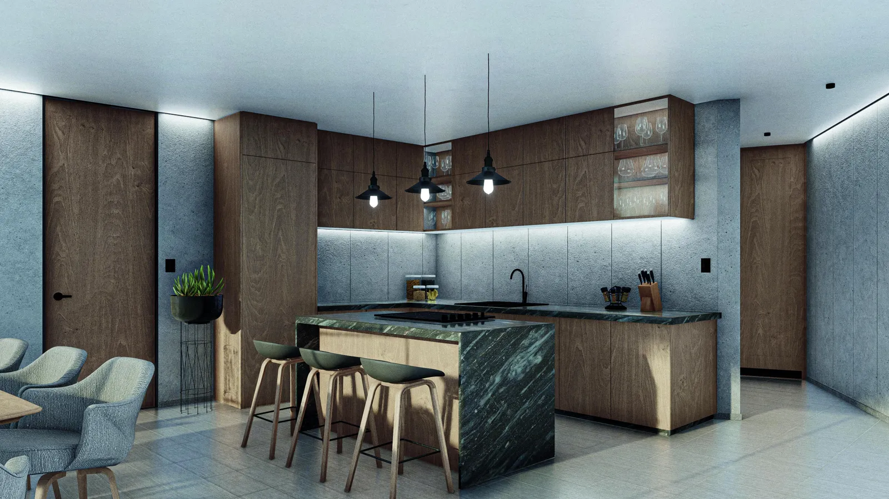
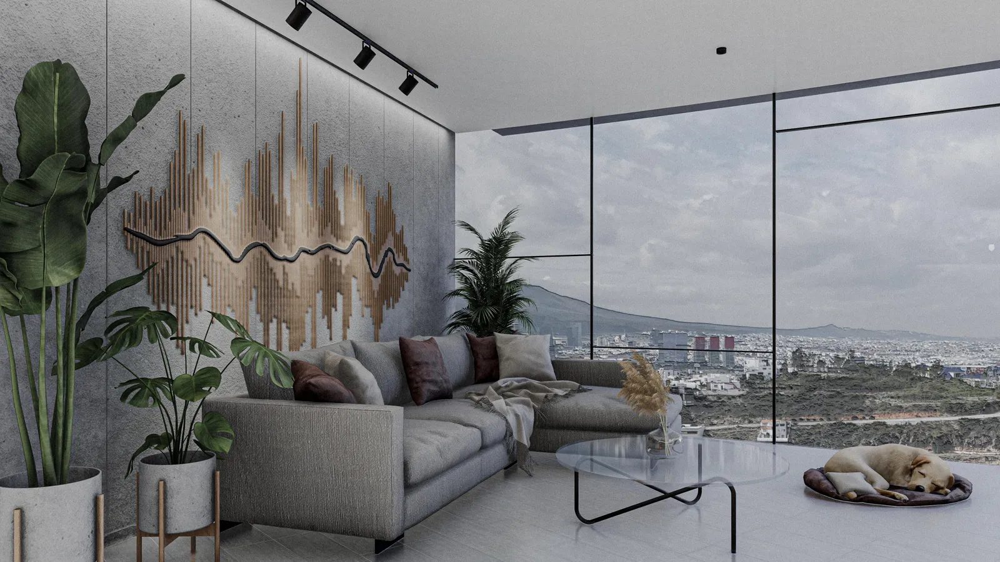
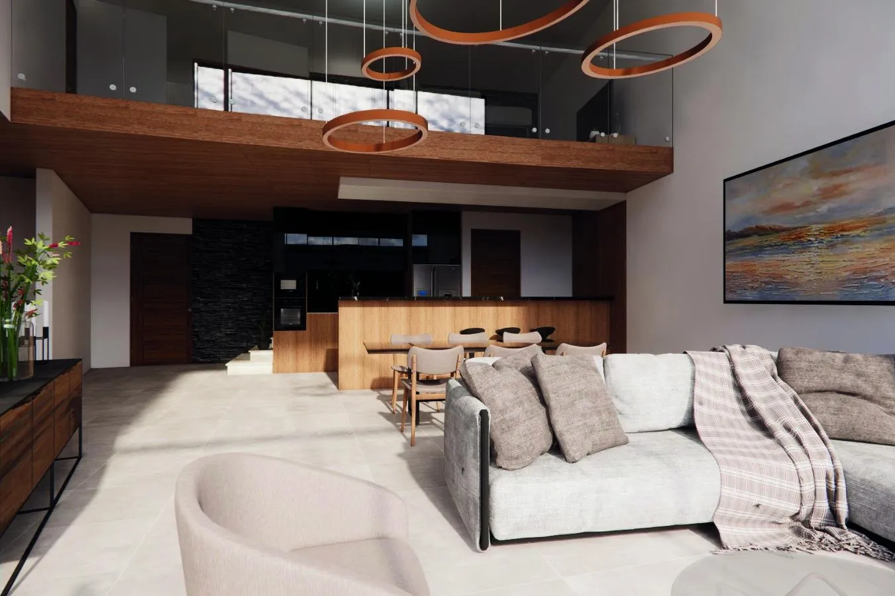

El exterior puede cambiar tu rutina
El proyecto contempla terraza o jardín según la unidad. Es una diferencia importante si quieres leer, recibir o pasar tiempo al aire libre desde tu departamento.
Departamento · Querétaro
$4,980,000 MXN
Precio actualizado · sujeto a disponibilidad y condiciones de la unidad.



Desliza para explorar las imágenes → · Imágenes ilustrativas del proyecto.
MÁS ALLÁ DE LOS METROS CUADRADOS
Puede encajar contigo si… Buscas una propuesta de departamento con distintas tipologías y valoras contar con un espacio exterior.
El proyecto contempla terraza o jardín según la unidad. Es una diferencia importante si quieres leer, recibir o pasar tiempo al aire libre desde tu departamento.
Las imágenes muestran una propuesta arquitectónica contemporánea. Revisemos la unidad concreta para valorar iluminación, privacidad y distribución más allá del atractivo visual.
Punta La Porta ofrece diferentes modelos. Para valorar los $4,980,000, comparemos la superficie, planta y características exactas de la unidad correspondiente.
Confirma la unidad asociada al precio y su superficie, estacionamiento y exterior. Si buscas rentarla, revisemos el reglamento y números netos antes de proyectar ingresos.
UBICACIÓN Y ENTORNO
Búsqueda por nombre del desarrollo; confirma el acceso conmigo antes de tu visita.
Explora las opciones del desarrollo. Consulta ubicación, unidad, superficie, precio y condiciones de entrega.